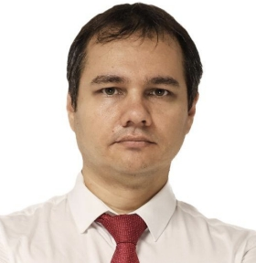

Alexey Molchanov
Experienced Backend and Fullstack Developer with over 15 years of professional experience in designing, developing, and scaling complex software solutions. Proven track record in implementing high-load projects, developing microservices architectures, and integrating third-party systems.
Entrepreneurial experience as CEO and project manager.
Work Experience
CEO & Lead Backend Developer, 06/2009 ‐ 03/2022
Techcon PVL - Pavlodar, Kazakhstan
Techcon PVL - Pavlodar, Kazakhstan
- Built and led a development team (over 140 projects, from websites to high-load systems).
- Developed and maintained CRM solutions, online streaming portals, chat systems, and bots.
- Set up automated CI/CD processes.
- Implemented monitoring, statistics, and logging systems.
- Integrated third-party services (VoIP, CRM, gateways).
- Developed terminals and automation solutions for cleaning companies.
CEO, 02/2014 ‐ 09/2017
Light Travel Boutique GmbH - Pavlodar, Kazakhstan
Light Travel Boutique GmbH - Pavlodar, Kazakhstan
- Founded and managed a travel agency.
- Implemented a self-developed CRM solution to optimize tour booking.
- Managed finance, taxation, and documentation.
Sales Manager, 06/2006 ‐ 03/2009
Logycom GmbH - Pavlodar, Kazakhstan
(leading IT company in Kazakhstan)
Logycom GmbH - Pavlodar, Kazakhstan
(leading IT company in Kazakhstan)
- Provided consulting and sales of computer hardware.
- Configured and assembled PC hardware.
- Used and maintained a CRM system.
Education
Bachelor, Computer Science & Software Development, 09/2004 ‐ 06/2008
Staatliche Universität Pawlodar Pawlodar, Kasachstan
Intermediate school, 09/1993 ‐ 06/2004
Allgemeinbildende Schule Nr. 4 Pawlodar, Kasachstan
Staatliche Universität Pawlodar Pawlodar, Kasachstan
Intermediate school, 09/1993 ‐ 06/2004
Allgemeinbildende Schule Nr. 4 Pawlodar, Kasachstan
Projects
-
Lotos Cleaning Chain – https://lotos-team.ru
Development of a scalable web platform with CRM/ERP, microservices, and IoT -
HotelsBook.kz – https://hotelsbook.kz
Hotel booking platform modeled after Booking.com with microservices and partner network

 Breitenbachstr. 1, 54293 Trier
Breitenbachstr. 1, 54293 Trier +49 176 209 533 45
+49 176 209 533 45 alexey.molchanov@web.de
alexey.molchanov@web.de 21.06.1986
21.06.1986 B
B LinkedIn
LinkedIn
Alexey Molchanov
Soft-Skills
- Adaptability
- Flexibility
- Communication skills
- Determination & proactivity
Languages
- Russish: Native
-
Deutsch: B1
-
English: A2
IT-Skills
- Backend & Architektur: PHP, Laravel, Node.js
- Frontend & Mobile: Vue.js, Flutter, React-Native, HTML/CSS
- Datenbanken & Infrastruktur: MySQL, MariaDB, Redis, ELK-Stack, Meilisearch, Apache/NGINX
- DevOps & Tools: Docker, Git/GitHub Actions, Jenkins, PHPStorm, Android Studio, Xcode, Linux/MacOS/Windows
- Integration: Payment, CRM, SMS-Gateways, VoIP, Binance API, XMPP, Bot-Entwicklung